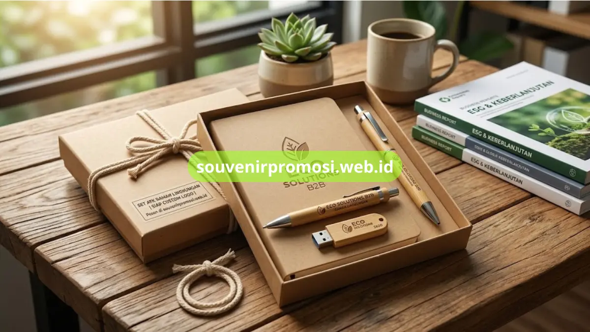

Poin Penting
- Tiga material utama: kayu bambu, kertas daur ulang, dan kemasan bebas plastik.
- Material tetap mendukung teknik cetak dan grafir logo perusahaan.
- Tren ini banyak diikuti perusahaan dengan kebijakan pengadaan berbasis ESG.
- Produk siap pesan dan siap custom melalui souvenirpromosi.web.id.
Daftar Isi
Pendahuluan
Set ATK ramah lingkungan untuk souvenir kantor B2B umumnya menggunakan tiga material utama, yaitu kayu bambu pada pulpen dan casing flashdisk, kertas daur ulang berkualitas tinggi pada agenda dan notebook, serta kemasan bebas plastik pada seluruh rangkaian produk.
Material-material ini dipilih karena tetap dapat dicetak atau digrafir logo perusahaan tanpa mengurangi kekuatan maupun tampilan premium set ATK. Souvenir Promosi menyediakan lini produk ini secara siap pesan dan siap custom melalui souvenirpromosi.web.id.
Bagaimana Tren Souvenir Kantor Ramah Lingkungan Berkembang di Kalangan Korporat?
Tren souvenir kantor ramah lingkungan berkembang seiring meningkatnya kebijakan pengadaan barang yang mempertimbangkan aspek keberlanjutan di berbagai perusahaan, termasuk dalam pemilihan merchandise dan souvenir promosi.
Sejumlah perusahaan mulai mencantumkan kriteria material ramah lingkungan dalam proses pengadaan souvenir korporatnya, sejalan dengan pelaporan ESG (Environmental, Social, and Governance) yang semakin umum di lingkungan bisnis. Pergeseran ini turut mendorong produsen souvenir, termasuk Souvenir Promosi, untuk mengembangkan lini produk berbahan kayu bambu, kertas daur ulang, dan kemasan bebas plastik sebagai alternatif dari material konvensional. Tren ini terlihat pada permintaan set ATK ramah lingkungan untuk kebutuhan gathering, seminar, maupun souvenir tahunan perusahaan berskala B2B.
Material Eco-Friendly Apa Saja yang Digunakan pada Set ATK Promosi?
Berikut tiga material utama yang digunakan pada lini set ATK ramah lingkungan di Souvenir Promosi, lengkap dengan karakteristik dan aplikasinya pada masing-masing produk.
Kayu Bambu pada Pulpen dan Flashdisk
Kayu bambu digunakan sebagai material utama pada bodi pulpen dan casing flashdisk dalam lini set ATK ramah lingkungan. Material ini memiliki tekstur alami yang khas, dengan permukaan yang tetap dapat digrafir logo perusahaan menggunakan teknik laser tanpa mengurangi kekuatan strukturnya.
Pulpen berbahan bambu umumnya dipadukan dengan tinta jenis standar sesuai ketersediaan produk. Flashdisk dengan casing bambu tersedia dalam beberapa pilihan kapasitas penyimpanan, mulai dari 8GB hingga 32GB, sehingga dapat disesuaikan dengan kebutuhan penyimpanan data korporat. Produk berbahan bambu ini tersedia untuk dipesan dengan opsi custom logo melalui souvenirpromosi.web.id.

Kertas Daur Ulang Kualitas Tinggi untuk Agenda
Kertas daur ulang kualitas tinggi digunakan pada notebook dan agenda dalam lini set ATK ramah lingkungan Souvenir Promosi. Kertas jenis ini melalui proses produksi yang memanfaatkan bahan baku daur ulang, namun tetap mempertahankan ketebalan dan tekstur yang sesuai untuk keperluan tulis-menulis sehari-hari.
Sampul agenda dapat dipadukan dengan material kertas kraft atau kain linen sebagai pelengkap tampilan eco-friendly secara keseluruhan. Logo perusahaan dapat dicetak pada sampul menggunakan teknik cetak UV atau emboss sesuai jenis material sampul yang dipilih. Agenda berbahan kertas daur ulang ini tersedia dalam beberapa ukuran dan siap dipesan melalui Souvenir Promosi.
Kemasan (Packaging) Bebas Plastik
Kemasan bebas plastik diterapkan pada seluruh rangkaian set ATK ramah lingkungan, mulai dari box berbahan kraft paper hingga tali pengikat berbahan katun atau rami sebagai pengganti plastik pembungkus konvensional. Kemasan jenis ini dirancang agar tetap kokoh melindungi produk selama proses pengiriman, sekaligus mendukung tampilan set ATK yang selaras dengan konsep ramah lingkungan secara keseluruhan.
Label dan informasi produk pada kemasan dicetak menggunakan tinta berbasis air sesuai ketersediaan bahan baku. Kemasan bebas plastik ini menjadi satu kesatuan dengan seluruh lini set ATK ramah lingkungan yang tersedia di souvenirpromosi.web.id.
Pesan Set ATK Ramah Lingkungan Custom Logo di Souvenir Promosi
Souvenir Promosi menyediakan lini produk set ATK ramah lingkungan yang siap dipesan dan dikustomisasi dengan logo perusahaan menggunakan teknik grafir maupun cetak UV sesuai jenis material. Proses pemesanan dimulai dengan pemilihan kombinasi produk, seperti pulpen bambu, notebook kertas daur ulang, atau paket lengkap dengan kemasan bebas plastik, dilanjutkan dengan pengiriman file logo dan konfirmasi jumlah pemesanan.
Perusahaan yang membutuhkan variasi set ATK lebih luas dapat melihat kategori tujuh set ATK premium untuk souvenir promosi perusahaan, sementara kebutuhan desain custom logo dapat merujuk pada inspirasi desain custom set ATK untuk branding perusahaan. Segera hubungi Souvenir Promosi melalui souvenirpromosi.web.id untuk memesan set ATK ramah lingkungan perusahaan Anda.
Set ATK ramah lingkungan berbahan kayu bambu, kertas daur ulang, dan kemasan bebas plastik memberi perusahaan opsi souvenir kantor yang sejalan dengan kebijakan pengadaan berbasis keberlanjutan. Setiap produk tetap dapat dicustom logo perusahaan melalui teknik grafir maupun cetak UV sesuai material yang dipilih. Lihat katalog lengkap dan pesan set ATK ramah lingkungan untuk kebutuhan souvenir kantor B2B perusahaan Anda melalui souvenirpromosi.web.id sekarang.